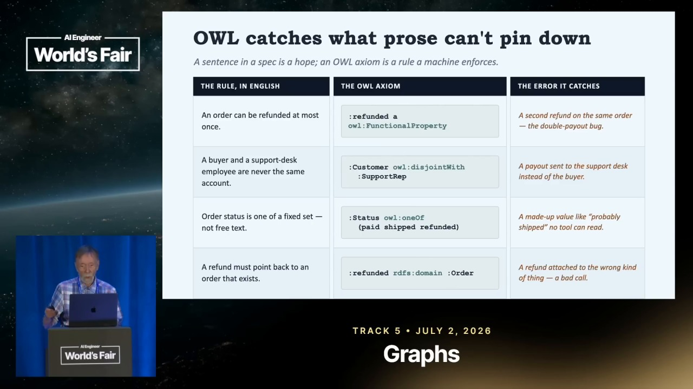

00 The knowledge of the builders, on tap
Builders talk.
Your agent listens.
Point it at the builders you trust. It watches every talk, keeps every sentence and every slide, and answers with the second it happened.
$ docker compose up -d
01 Proof
It watched the screen, too.
One frame, one line of on-screen text, and the second it was up. This is what an answer looks like before anybody writes a paragraph about it.

- On-screen text
- owl:FunctionalProperty — line 11 of 34, conf 0.99873
- Never spoken
- At 19:01 the speaker says “I’ll just put these, you can look at the slides” and never reads the line out. The string is in no transcript, in any talk.
- Found at
- 18:56 (t = 1136.335 s · shot 44 · 1128.49–1164.95)
- The receipt
- youtu.be/Sir59K8ZDPU?t=1136
Ask for owl:FunctionalProperty and one result comes back out of talks: a slide from Why Agentic Systems Need Ontologies, up for thirty-six seconds, at 18:56. Nobody read it out. A transcript cannot answer that question at any quality of retrieval, because the string was never said — the sentence, the slide, and the second are three different legs, and this one only exists on the screen.
02 The corpus
You don’t have time to watch it all.
Your agent does.
Follow the builders. Get the sentence, the slide, and the second.
Every cover below is a talk vidtheque sat through end to end — the words, the text that crossed the screen, and the frames, all answerable to the second.
Today: point index-video at a channel and it watches every talk on it,
once. Next: the subscription stands, and it keeps watching so you don’t have to.
That line is not shipped yet, which is why this cell is dashed.
03 The agent
Your agent watched it.
An agent, on the real protocol, answering a question no single talk answers: four speakers, four positions, one call.
▸ ask What do speakers disagree about when it comes to LLM-as-a-judge? $ search "LLM as a judge" transcript 1 6 [transcript] When Will The Benchmaxxing Plague End? — Nick Heiner, Surge AI (-npY6XjM8CQ) 16:01 · https://youtu.be/-npY6XjM8CQ?t=961 And LLM as a judge doesn't really work either because LLMs don't have good taste in writing. [transcript] The Future of Evals: From LLM as a Judge to Agent as a Judge — Aparna Dhinakaran, Arize AI (q2JrUKBMf0w) 04:07 · https://youtu.be/q2JrUKBMf0w?t=247 Agent as a judge is about adaptive dynamic analysis. LLM as a judge just gives you a fixed rubric with these fixed scores. [transcript] Evaling Video Slop — Maor Bril, Character.ai (b_PmGocP4rc) 03:59 · https://youtu.be/b_PmGocP4rc?t=239 We started using LLM as a judge for everything, and we have amazing foundational models that we just throw videos at them. [transcript] Evals-Driven Development for a Mental Health AI Coach — Akele Reed & Dave Revere, SonderMind (O72p-rBb2bA) 04:24 · https://youtu.be/O72p-rBb2bA?t=264 Keeping the guardrails as separate LLM as the judge calls makes them more robust and harder to circumvent. ▸ answer They disagree about whether the judge can hold taste. Surge argues it cannot — writing quality is the case where the judge inherits the frontier's own blind spot (-npY6XjM8CQ 16:01) — and pays professional writers instead. Arize agrees the fixed rubric is the limit, but treats it as a generation problem rather than a dead end: an agent judge does adaptive analysis over a trajectory (q2JrUKBMf0w 04:07). Two teams ship it anyway and say what makes it hold: Character.ai calibrates the judge against human annotation frame by frame (b_PmGocP4rc 03:59), SonderMind splits guardrails into separate judge calls so one prompt cannot be talked out of all of them (O72p-rBb2bA 04:24). Nobody in the four says it is solved.
04 Run it
Yours, on your box.
One compose file, one SQLite file, no build step, no runtime network dependency. The CPU half runs on a Pi.
Run your own.
Clone it, copy the example env, bring it up. Then point index-video
at the first builder you want followed.
$ docker compose up -d
Any agent can drink from it.
One line adds the corpus to Claude, Codex, or anything else that speaks MCP. It is read-only, and it is the same surface the transcript above ran on.
$ claude mcp add --transport http vidtheque <mcp_url>